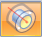
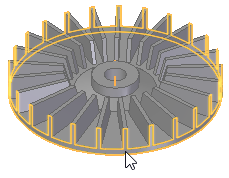
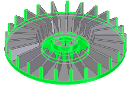
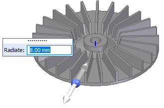
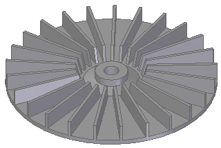

Edit the radius of a face
-
Choose Home group→Solids tab→Revolve list→Radiate

. -
Click the faces or live section edges to radiate.

Note:You can use the Include All Coaxial Faces option to select a face and all faces coaxial to the selected face.

-
Click Accept
 .
. -
Drag the handle or type a value in the Dynamic Value box to edit the radius.

-
Right-click to accept.

How do I
Construct a revolved extrusion: base featureConstruct a revolved extrusion or cutout: subsequent features
Move a group of faces radially along a direction
Learn more
Constructing revolved synchronous featuresConstructing revolved features using the Select tool
Look up more details
Revolve commandRevolve command bar
Revolved Protrusion command bar
Radiate command
Radiate command bar